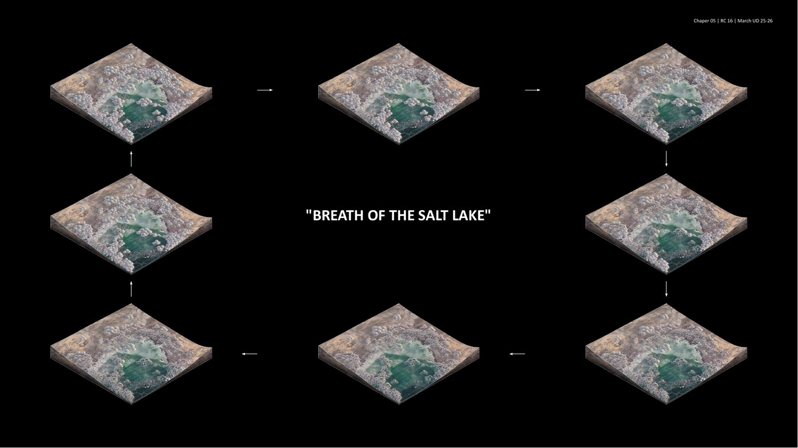

Index of all works
Projects
Directory
Students
About
The Saline Domes
An online exhibition about salt as environmental archive, growing material and territorial metabolism.

Back to homeProject
SALINE DOMES
Abstract
Saline Dome investigates how architecture can emerge through the collaboration of salt crystallisation, microbial mineralisation, and computational form-finding. Located in a degraded inland salt-lake landscape in China, the project treats salt as an active non-human medium that grows, collapses, repairs, and records environmental change.